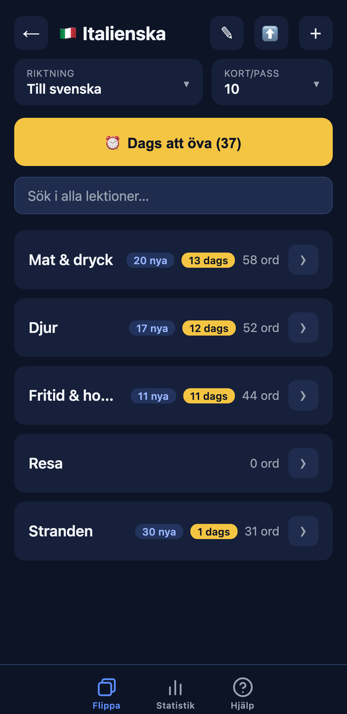
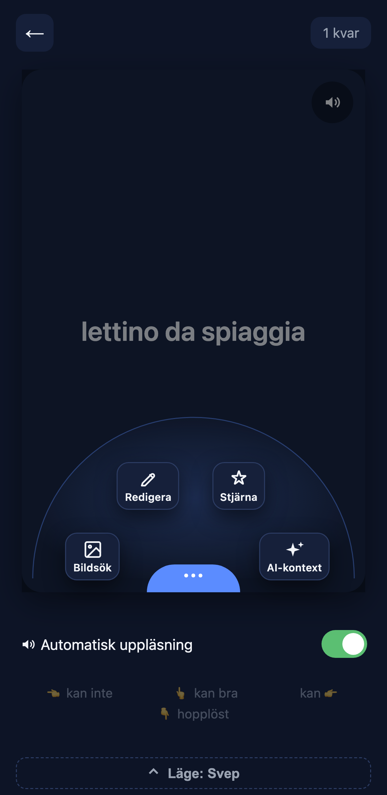
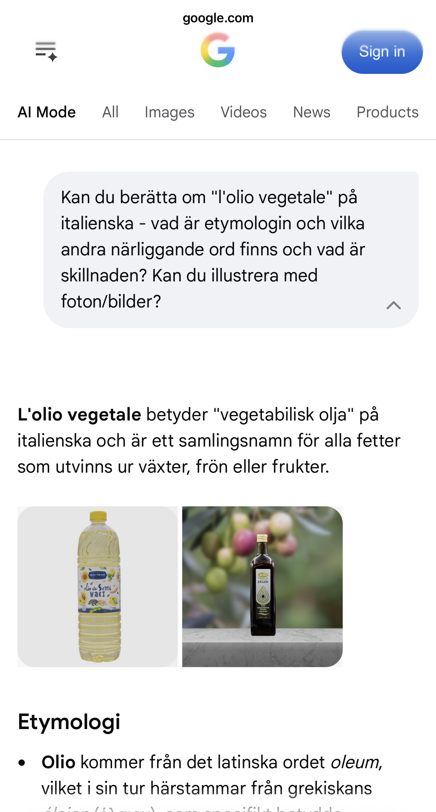
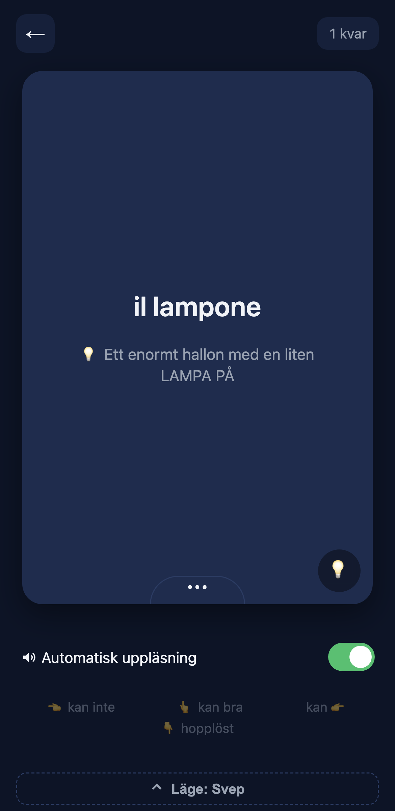
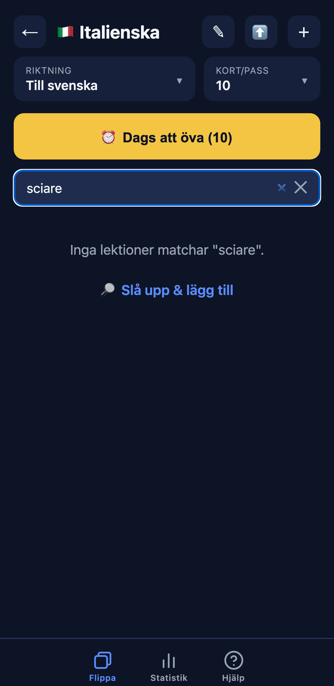
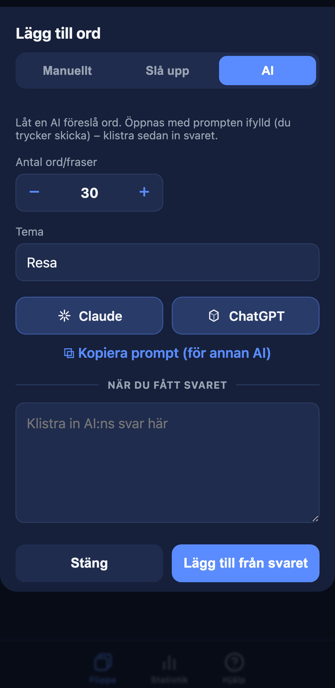

Appen håller reda på vad du ska öva
Dina ord delas upp i lektioner, och "Dags att öva" samlar precis det som är dags idag enligt en Leitner-baserad repetitionsmodell. Du behöver inte planera – bara öppna och köra.

Svep för att svara
Vänd på kortet och svep: kan inte, kan eller kan väldigt bra. Appen skjuter fram nästa repetition automatiskt. I lilla ⋯-menyn (en solfjäder) finns Bildsök, Redigera, Stjärnmärk och AI-kontext – och uppläsning/handsfree finns ett tryck bort.

AI-kontext – etymologi, närliggande ord & bilder
Osäker på ett ord? Tryck AI-kontext så öppnas en AI-sökning om ordet: etymologi, närliggande ord och vad som skiljer dem åt, plus bilder. Här reds l'olio vegetale (vegetabilisk olja) ut – varifrån ordet kommer och vad det egentligen omfattar. Man kan scrolla vidare för mer.

Minnesregler som gör att det fastnar
Lägg till en egen minnesregel på knepiga ord – en bild eller ordvits som får glosan att sitta. il lampone (hallon) blir lätt när du ser "ett enormt hallon med en liten LAMPA PÅ". Regeln finns där när du behöver en knuff.

Sök & lägg till på studs
Söker du efter ett ord som inte finns? Då kan du slå upp översättningen och lägga till glosan direkt därifrån – innehållet växer medan du använder appen.

Fyll på – skriv, slå upp eller fråga en AI
”＋ Lägg till ord” samlar tre sätt i samma dialog: skriv in orden själv, slå upp & översätt automatiskt (redigerbart), eller be en AI om förslag – öppna direkt i Claude/ChatGPT och klistra in svaret. Du kan även importera färdiga listor som CSV. Från noll till hundra ord på minuter.
Streak, heatmap & prestationer
Se din streak, en heatmap som anpassar sig efter hur mycket du faktiskt pluggar, och prestationsbrickor för dagar och veckor. Nivåerna kan du ställa in själv.
Kom igång på en minut
Skapa ett ämne
Välj språk – flagga och uppläsning sätts automatiskt.
Fyll på ord
Skriv in dem, slå upp & översätt eller be en AI – eller importera en CSV.
Börja swipa
Kör "Dags att öva" – appen sköter repetitionen åt dig.